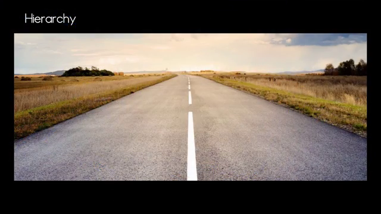
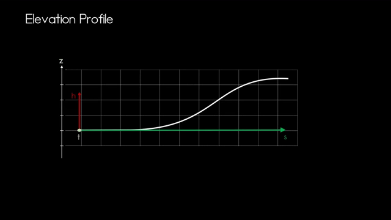
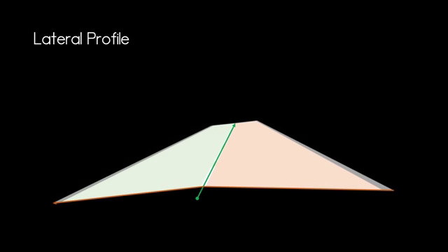
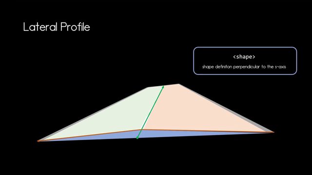

videoplayback_原文
2026年5月15日 13:28
OpenDRIVEとは何かについてのビデオへようこそ。私の名前はNicoです。このビデオでは、OpenDRIVEについての基本的な概念を説明します。交通シミュレーションを実行する際には、走行対象となる環境が必要です。そのため、道路や道路ネットワーク全体のモデル化が不可欠です。道路や道路ネットワークのモデリングは、この例で見られるように非常に複雑になる可能性があり、作成には多大なコスト（費用や時間）がかかります。このような道路ネットワークを交換可能な形式で保持することは、将来のモビリティソリューションを開発する多くの人々の負担を大幅に軽減するでしょう。正直なところ、彼らはすでに十分すぎるほどの課題に直面しているのです。そこで、ASAM OpenDRIVEは、走行シミュレーションのための静的道路ネットワークを記述する交換フォーマットの仕様を提供しています。
OpenDRIVEの主な役割は、道路沿いのオブジェクトを含む道路の記述です。OpenDRIVEは、道路、車線、交差点、信号機など、交通流に影響を与えるあらゆる要素のモデリング方法を網羅しています。OpenDRIVEの概要がわかったところで、OpenDRIVEファイルの基本的な階層構造を見ていきましょう。
前述の通り、OpenDRIVEでは道路ネットワークをモデリングして、道路の基本形状を把握できます。OpenDRIVEでは「道路リファレンスライン（基準線）」を使用します。リファレンスラインは、鳥瞰図（真上から見た視点）での道路の曲がりやカーブを定義します。リファレンスラインはOpenDRIVEにおける鍵となる概念であり、OpenDRIVEのほとんどの機能はこのリファレンスラインに基づいています。道路を形成するには、形状だけでなく走行するための車線も必要であり、それらの車線は前述のリファレンスラインに沿って付与されます。走行可能な基本道路ができたところで、OpenDRIVEでは、ここに示されている制限速度標識のようなさらなる機能を道路に追加できます。もちろん、この表現は氷山の一角に過ぎません。

次に、すべてのOpenDRIVEファイルのXMLコード構造について詳しく掘り下げてみましょう。最上位レベルには「OpenDRIVE」要素があり、この要素内にすべての機能を備えた道路ネットワークを定義します。ヘッダー（Header）では、使用しているOpenDRIVEのバージョンを定義したり、作成者などのメタデータをファイルに追加したりできます。ヘッダーの下に、道路を完成させるためのすべての要素を追加し始めます。
OpenDRIVEの各道路には、独自の「road」要素があります。この例では1本の道路ですが、2本の道路を持つネットワークであれば、road要素内に2つのroad要素エントリーが存在することになります。各道路の特性は、車線、信号、オブジェクトを含めて定義されます。
すべての道路にはリファレンス要素が必要であり、このリファレンスラインは「planView」要素内で定義されます。道路を左右に形作るにはジオメトリ要素を使用しますが、これについては別のビデオで詳しく解説します。
リファレンスラインはXY平面上の道路形状のみを定義しますが、地球は平坦ではないため、すべての道路に標高プロファイル（elevation profile）が必要です。これはリファレンスラインのZ値を定義するもので、リファレンスラインに沿った道路の高さを示します。

前述の通り、リファレンスラインはplanViewで定義され、標高はplanView（XY平面）からの高さの差となります。道路を形作るにはこれだけでは不十分であり、もう一つの次元として「ラテラルプロファイル（横断面プロファイル）」が必要です。ラテラルプロファイル内には、道路形状を定義するための2つの異なるオプションがあります。シェイプ（shape）要素は、例えばここに示されているような横断勾配（crossfall）など、リファレンスラインに対して垂直な道路形状を定義します。もう一つのオプションは、S軸を中心とした回転を定義する「カント（super elevation）」です。例えば、道路が2度傾いている場合、道路は適切な形状になります。


車線要素（lane element）では、道路のすべての車線、特定の車線タイプ、幅を指定できます。道路に必要なオブジェクトや信号を定義するために、OpenDRIVEは道路定義の中にリザーブ（予備）要素を用意しています。導入部で述べたように、OpenDRIVEは道路ネットワークの静的な内容のみを定義します。
そのため、信号機を定義する場合、その信号機のコントローラーは「controller」要素内で参照されますが、コントローラー自体はOpenDRIVEの外部で設計・定義されます。OpenDRIVEでは、交差点を指定するために「junction」要素および基礎となる接続要素が使用されます。交差点同士をリンクさせると非常に便利な場合があります。例えば、円状に配置されたT字路を連結してラウンドアバウト（環状交差点）を形成するなどです。
これで、OpenDRIVEの基本的な役割がお分かりいただけたと思います。まだまだ発見すべきことはたくさんありますので、今後の動画にもご期待ください。ご視聴ありがとうございました。このビデオを楽しんでいただけたなら幸いです。より詳細な情報を希望される方は、ぜひ高評価とチャンネル登録をお願いします。